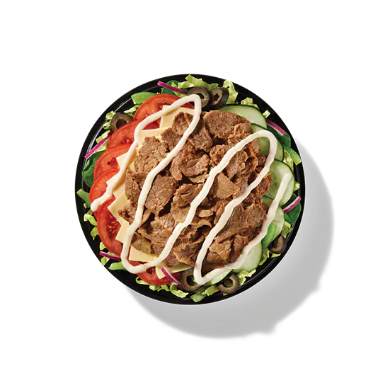

Subway's menu runs over 100 sandwiches, wraps, salads, and bowls, and prices shift depending on which store you're actually looking at. This page shows a sample from the full menu, with average sampled prices from real Subway locations, plus a straight answer to the five things people usually want to know before ordering: which item has the most protein, the fewest calories, the least sodium, the lowest carbs, and the best value for your money.
Prices here are average sampled prices from 19 real Subway locations, and nutrition figures come from Subway's published information, separate from the price sample. Where a price varies by location, that's said directly, so treat a sampled price as a close estimate, not what your store will charge exactly.
How to read the numbers: 199 items are listed across 14 sections, 172 have a confirmed average price, and 104 of those were priced at all 19 sampled stores. 27 items have no confirmed price, and 58 priced items have no published protein, sodium or carb figures, so those gaps are shown, not guessed.
Skip the reading. Just tell it what you want.
Set a protein target, a budget, or a sodium limit, and the decision tool finds matching items across 199 listed items in one tap.
Subway Picks by Goal: High Protein, Low Sodium, Low Calorie & More
Not sure what to order? Here's the resolved pick for five common goals, checked against the item that looks best on paper but isn't.
The only item with 48g protein or more at under 1,000mg sodium. The technical leader, the 5 Meat Italian Wrap, hits 66g, but at 3,230mg sodium, more than a full day's limit in one wrap.
The lowest-sodium salad, the Veggie Delite Salad, gets there with only 10g protein. This one costs 270mg more sodium and gets you 2.6x the protein for it.
Lowest-calorie item among sandwiches, wraps, salads and bowls, by a wide margin. The next lowest option in those categories, the 6" Ham & Turkey Stacker, is already 290 calories and still only gets you 20g protein.
Best protein-per-dollar on the whole menu. If you'd rather skip the bread, the Baja Chicken Protein Pocket is nearly identical on value with lower sodium.
Highest protein-to-carb ratio on the menu. The closest competitor, the 5 Meat Italian Bowl, comes close on carbs but costs you more than double the sodium to get there.
Deals, Hours and Today Sub
Before you order, check the deal that fits your cart, the sub that is $4.99 today, and whether your store is open.
Subway coupons: what saves you the most?
15 community-reported codes in tier order, the BOGO free footlong through November 8, 2026, Sub Club terms, and the no-code deals, matched to your order type.
Subway Sub of the Day: $4.99, all week
Monday Meatball Marinara through Sunday Spicy Italian, with regular 19-store prices, saving per day, calories, protein and sodium.
Subway hours: is your store open today?
Typical US hours, Monday to Saturday 7 AM to 10 PM and Sunday 8 AM to 9 AM, plus the full 2026 holiday table, with Thanksgiving and Christmas Day closed at most stores.
Browse by Category
A sample from every category, with real prices and full nutrition. See every item and every category-specific pick on each category's own page.
The 5 Meat Italian has the most protein of any sandwich at 40g, but it's also the saltiest among priced sandwiches at 1,940mg sodium. The Grilled Chicken & Fresh Avocado gets close, 35g protein, for less than half the sodium.
For value, the Cold Cut Combo delivers 25g of protein for $4.37, the best protein-per-dollar on this menu.


Wraps run 400 to 1,050 calories; only one option here comes in under 450.
The Chicken & Bacon Ranch has the most protein of any wrap at 56g, but also carries high sodium at 1,850mg. The Grilled Chicken offers 48g protein for 1,240mg sodium, a lighter sodium load for close to the same protein.
For value, the Cold Cut Combo delivers 35g protein for $7.31, the best protein-per-dollar among wraps at 4.79g per dollar.


The 5 Meat Italian has the most protein among salads at 35g, but it's also the saltiest among priced salads at 1,690mg sodium. The Grilled Chicken offers 26g protein for just 590mg sodium, a lighter option protein-for-protein.
For the lowest calorie count, the Veggie Delite sits at 150 calories, the lowest among sandwiches, wraps, salads and bowls.


The 5 Meat Italian has the most protein of any bowl at 66g, but its 3,170mg of sodium exceeds the full daily recommended limit in one meal.
For the lowest sodium bowl, the B.L.T. Bowl is 890mg, but with only 22g protein. The Grilled Chicken offers 48g protein for 960mg sodium, the lowest sodium among bowls with 40g protein or more, and a more balanced protein-to-sodium ratio.





All four Protein Pockets cost the same $4.25, so nutrition is what sets them apart here.
The Baja Chicken and Peppercorn Ranch Chicken are nearly identical, 24g protein each at around 330 calories; the choice comes down to flavor. The Italian Trio costs the same $4.25 but has 480 calories and 1,580mg sodium for only 22g protein.


The Turkey has slightly more protein and fewer calories than the Ham, at nearly the same price.


The 6" Steak, Egg & Cheese offers 31g protein for just 70 more calories than the plain Egg & Cheese. The Black Forest Ham, Egg & Cheese gains 5g protein for only 30 extra calories, the strongest protein gain per calorie in this category. Weighed against price, Steak, Egg & Cheese is also the best value on the 6" tier.
The 6" Egg & Cheese has the lowest sodium and lowest calories among the 6" breakfast items, at 1,020mg and 470 calories.
The 12" versions are about one and a half times these numbers and have no confirmed price at any of the 19 sampled stores, so value comparisons here are limited to the 6" tier.


There are five cookies in this category, and all five have confirmed macros. The lowest-calorie one, Oatmeal Raisin, also has slightly more protein than the rest, though at 3g it isn't a meaningful protein source either way.
Chips in this sample have prices, but only 6 of the 19 chips and sides items were priced at all 19 stores. Among snacks, only cookies, Hash Browns and Applesauce have confirmed macros. Hash Browns and Applesauce have no confirmed price, so they are not in the sample cards. Without confirmed macros for the chips, no protein or sodium comparison is possible across that lineup, though calorie comparison is possible from the cards.


Subway's drinks menu covers 38 bottled, fountain, and hot options, shown here by price and calories. Fountain pours run higher in calories than their bottled counterparts, Mountain Dew® from the fountain is 420 calories versus 170 in a 12 fl oz can.
For a zero-calorie option, Pepsi® Zero Sugar swaps in at 0 calories for about the same price as regular Pepsi®. Prices across the category range from $1.76 for Honest Kids® Super Fruit Punch to $4.03 for Celsius® Sparkling Orange.

These two are close in calories, about 10 apart, and cost the same. The difference is unlikely to be the deciding factor between them.


Hot Honey Turkey Italian has 70 fewer calories than the original, for 50 cents more. Both are Limited-Time-Offer items, so it's worth confirming they're still available before visiting for them specifically.


The two options are only 10 calories apart, though the Steak version costs 79 cents more. Calorie-wise, that's a small difference either way, so the choice likely comes down to preferred protein. Like the Hot Honey sandwiches, these are Limited-Time-Offer items worth confirming before a visit.


Loaded Baked Potato with Bacon and Broccoli Cheddar both have 200 calories and 9g protein, but the Loaded Baked Potato has slightly less sodium and costs a little less.
Chicken Noodle is the lowest-calorie soup at 70 calories, but it has 1,160mg sodium, the highest of the three. If sodium matters alongside calories, the 70-calorie option isn't necessarily the better fit.
There's only one Personal Pizza on the menu, so no comparison needed here. Full nutrition beyond calories isn't published for this item yet, so this card shows what's actually available.

Frequently Asked Questions
The 5 Meat Italian Bowl has the most protein among the items on this page at 66g, but it also carries 3,170mg of sodium, more than a full day's typical sodium limit in one meal.
Among sandwiches, wraps, salads and bowls, the Veggie Delite Salad has the fewest calories at 150, with 10g protein and 320mg sodium.
Among sandwiches, wraps, salads and bowls, the Veggie Delite Salad has the lowest sodium at 320mg. The Veggie Delite Mini Sub, a kids' portion, is lower still at 240mg, but it's a smaller item so it isn't a direct comparison.
The 6" Cold Cut Combo has the best protein-per-dollar on the menu, 25g of protein for $4.37, about 5.72g of protein per dollar.
Not usually. The 5 Meat Italian Bowl has the most protein at 66g but also the most sodium at 3,170mg. The Grilled Chicken Bowl has less protein, 48g, for a fraction of the sodium at 960mg.
Calories and sodium aren't directly related. Chicken Noodle Soup has just 70 calories but 1,160mg sodium, more than either 200-calorie soup on this menu.
No. The prices shown are sampled from 19 real Subway store menus, not a single official price list, so your local store may charge slightly more or less.
Drinks and snacks, along with Deli Faves, Personal Pizza, and the Hot Honey items, have confirmed prices and calories but, for many items, no published protein, sodium, or carb figures yet. Nutrition figures on this page come from Subway's official nutrition information, separate from the price sampling described above.
What should you remember before ordering?
Across this menu, protein and sodium tend to move together. The items with the most protein are usually also the saltiest, and the lighter-sodium options nearby often give up only a little protein in return. That trade-off, more than any single "best" item, is the main thing worth weighing before you order.
Skipping the bread doesn't automatically mean a lighter meal. Bowls concentrate the same fillings that sandwiches and wraps dilute, so a bowl can carry more sodium than the sandwich version of the same order.
Prices here are sampled from real stores, not a fixed national list, so treat them as a close estimate rather than what you'll pay exactly. Nutrition numbers come from Subway's own published information and are more consistent, though a few categories still don't have full figures published.